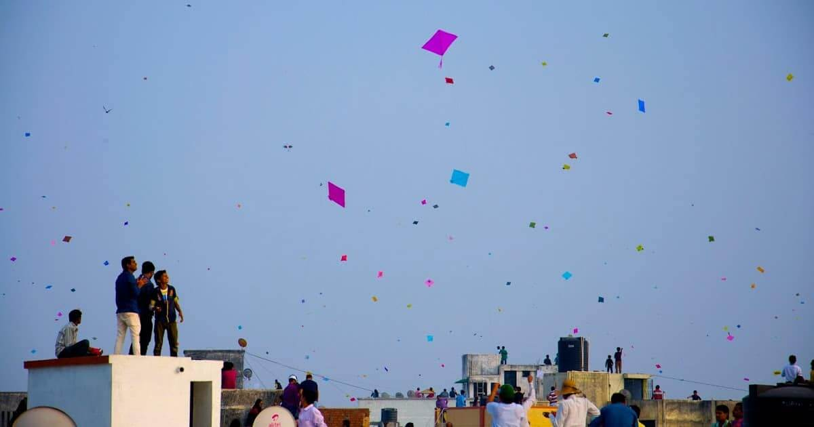
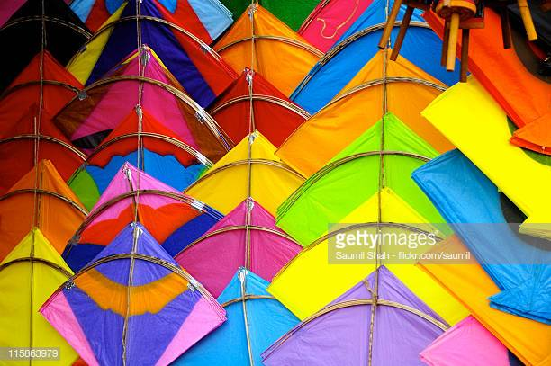
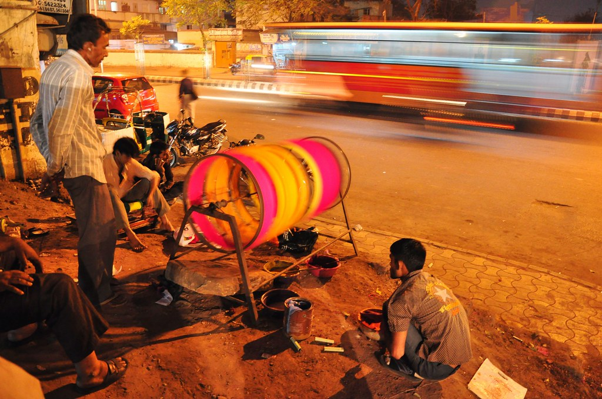

Uttarayan is a very unique festival which takes place all over India. On Janurary 14th and 15th, the skies over most cities are filled with kites of all sizes and colors. Additionally, this festival is celebrated when winter begins turning to summer; accoridng to the Hindu calendar this transition is known as Makar Sankranti also called Uttarayan.
Uttarayan is not a festival where people are happily meeting each other and having fun; instead, it's the exact opposite of that. It is a festival where we have a competiton and battle (non-physical) with nearby kit-flyers, the main purpose of this festival is to cut others strings - a thread which is attached to the kite which helps the flyer to fly the kite, and bring down their kites.
People get very upset when one cuts down his/her kite. A victory cry is followed where a person cuts down the other kite and yells, "Kaai Po chhee".
The most important tools are Kites and Strings. The quality of your tools will decide the fate of the battle; there are many ways to prepare your string, the most popular is by wrapping the string around an oval wheel.
Eventhough, Uttarayan is celebrated all aournd india, the most popular cities where the most kites are flown are in Ahmedabad, Baroda and Annand.